Let
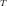
be sufficient and a square-integrable estimator. Then
a square-integrable estimator. Then
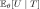
does not depend on , so it is a
statistic; write it
, so it is a
statistic; write it 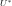
.On a countable sample space the conditional expectation given is computed from the conditional probabilities:
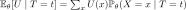
. By sufficiency each weight is free of, hence so is the sum,
and the resulting function of  is measurable with respect to the
is measurable with respect to the
 -algebra generated by .
-algebra generated by .
Let be a square-integrable unbiased estimator of  and
sufficient. Then
and
sufficient. Then
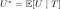
is an unbiased estimator of and
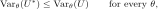
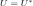
almost surely under .
.
is a statistic by the previous proposition, and it is unbiased because
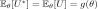
by the tower property with the trivial-algebra.
For the variances, the decomposition of the previous note applied under
with
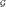
the-algebra generated
by gives
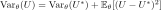
. The last term is non-negative, giving the inequality, and it vanishes exactly when almost surely. Since both estimators are unbiased, the same comparison holds for the mean squared errors.If an unbiased estimator has smallest variance among all unbiased estimators, then it is almost surely a function of every sufficient statistic.
Let be such an estimator and sufficient. Then is
unbiased with
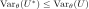
, and minimality forces equality; by the equality case almost surely, and is a function of by construction.The theorem says where to look for a good estimator and not how to recognise the best one: two different unbiased functions of the same sufficient statistic are not compared by it. What settles that is completeness of the statistic, under which the conditioned estimator is unique and hence optimal – the Lehmann-Scheffe theorem, which is the natural next note and is not written yet.